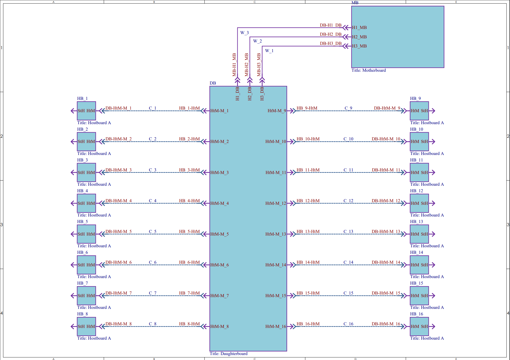
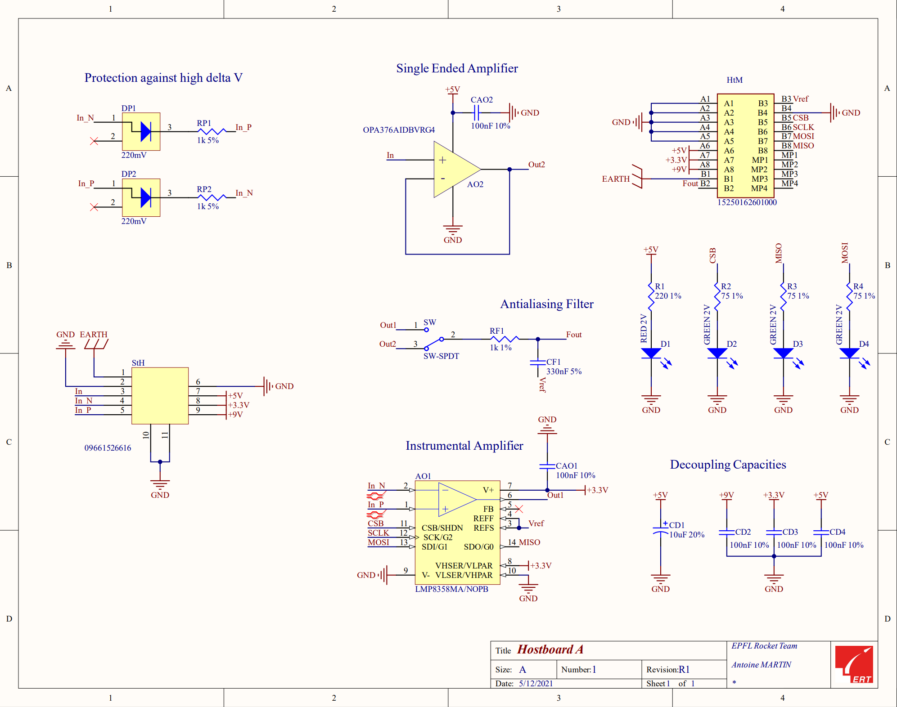
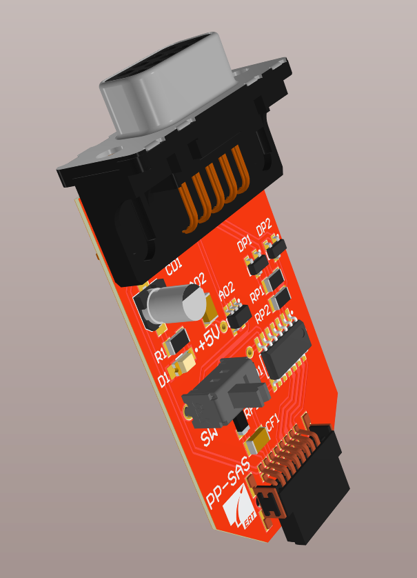
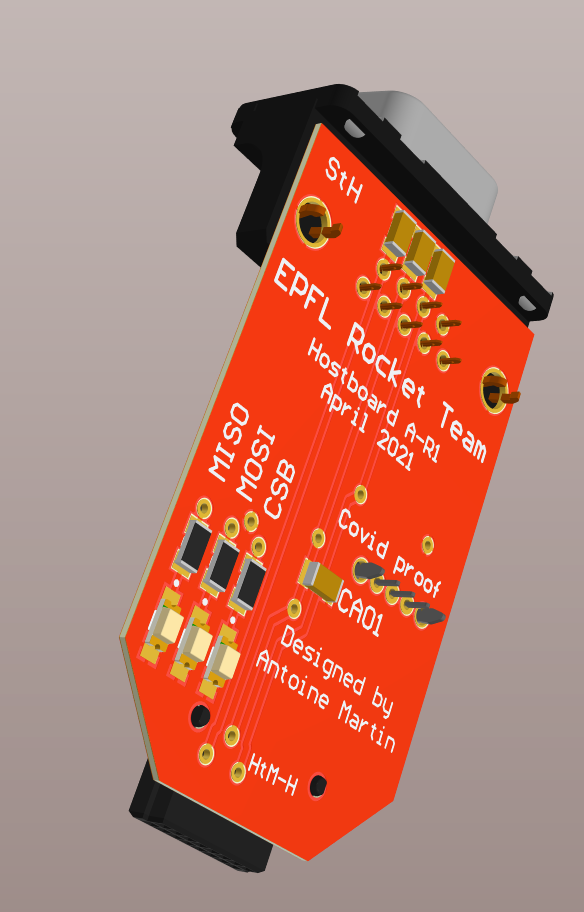
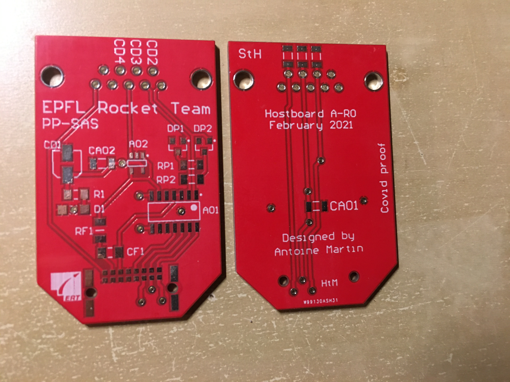
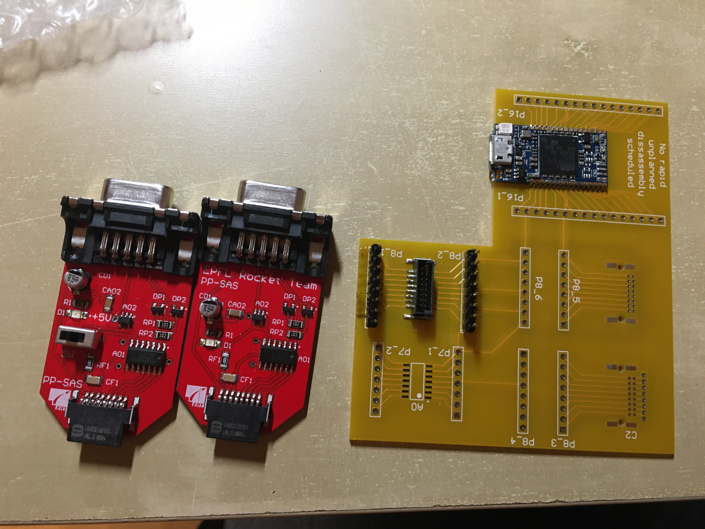
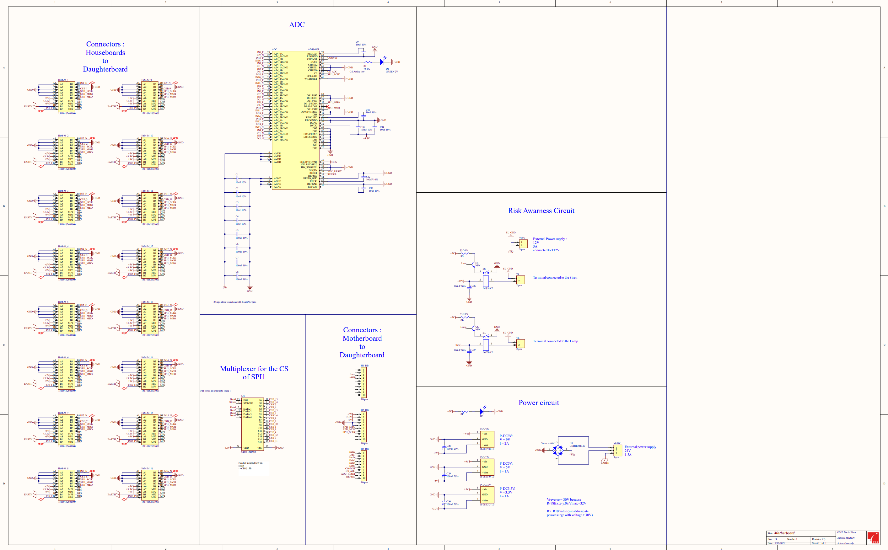
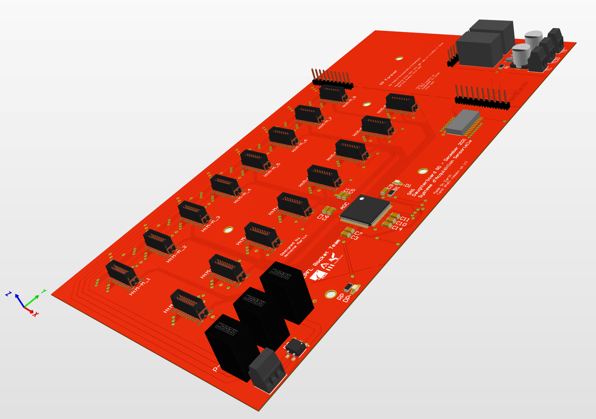
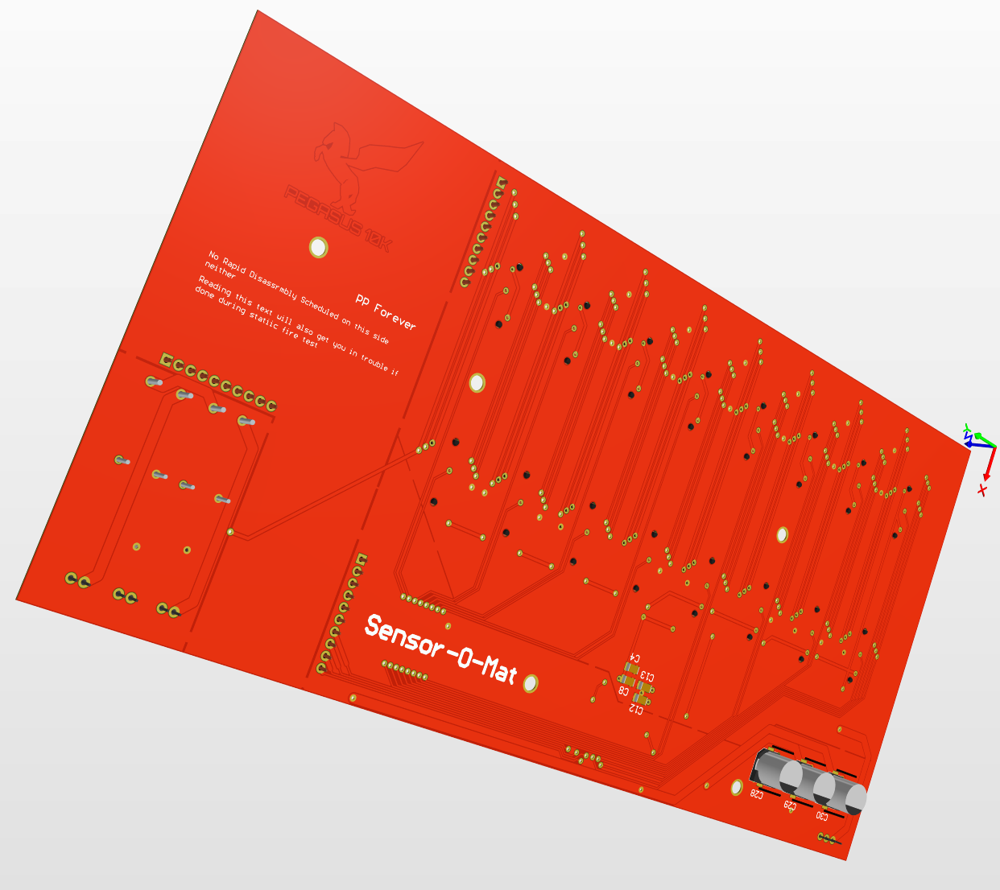

Introduction
Requirements:
- Support up to 16 sensors simultaneous
- Support different kind of sensors, must be easily upgradable to support new ones
- Independent conditioning of the signal for each sensor (1 board per sensor)
- Transmit the data to the computer which will log it
- Settings must be set from the computer
- Sampling rate of 1kHz
- Resolution of 16bits
- Required supported sensors:
- force sensor using Wheastone bridge
- Thermocouple
- Pressure sensor
Project Architecture
Components
The list of components used has changed quite a lot thorough the design, I will for the sake of clarity only talk about the final design choice.
Analog to Digital Converter
Accordingly to the requirements, the ADC must have 16 physical pins to which the sensors would be always connected. Moreover it has to sample each 16 sensors at a resolution of 16 bits at 1kHz.
MCU
The MCU must validates the following requirements:
- 2 SPI interface of at least 256 kbits/s (one for the ADC, the other for the USB port)
- be of the STM32 family (since it’s the one mostly used at the ERT)
- handle a SPI data traffic of 256 kbits/s from the ADC
In order to reduce the workload on the PCB design, the MCU must be already assembled on a board featuring :
- USB interface for transmitting data/debugging/programming of the MCU
- Header pins such that it can plugged as a shield on the main PCB board
The chosen MCU is the Nucleo STM32 F446RE.
Power Supply
Many voltages are needed : 5V, 3.3V, 9V, 12V.
Hostboard A
   PCBs assembly  Assembled PCBs with test pcb 
Daugtherboard
  